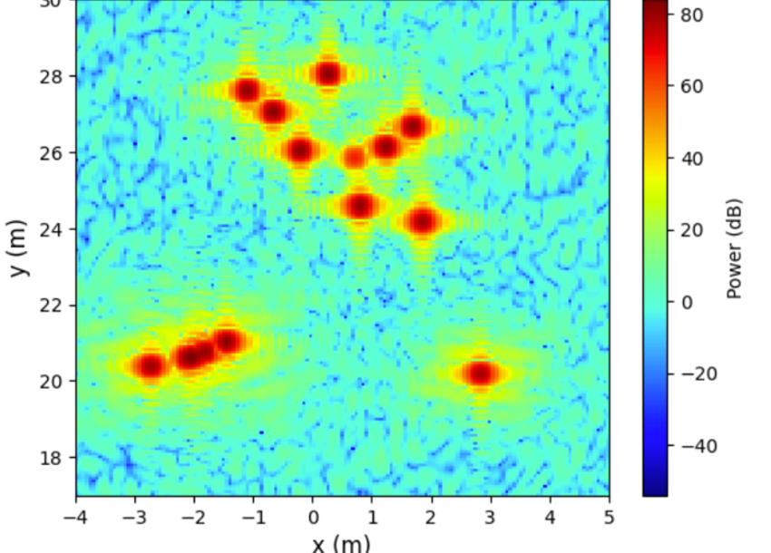
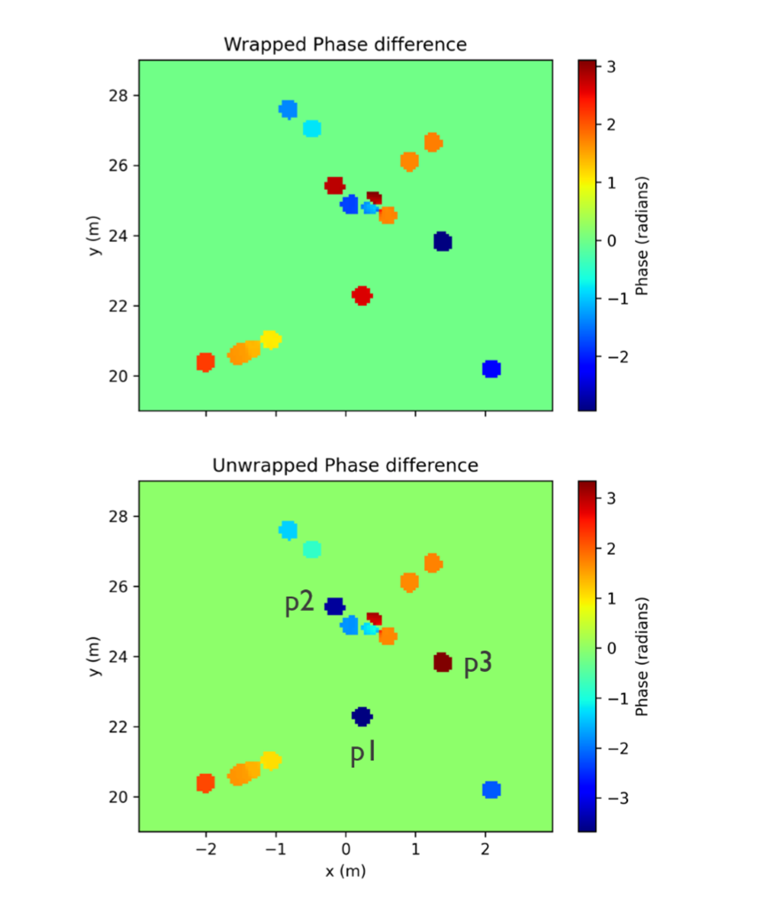
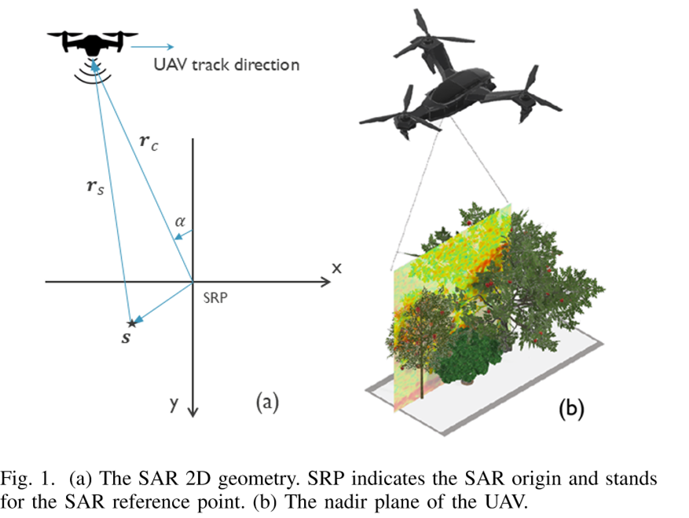
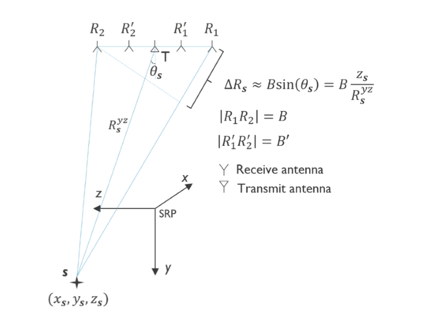
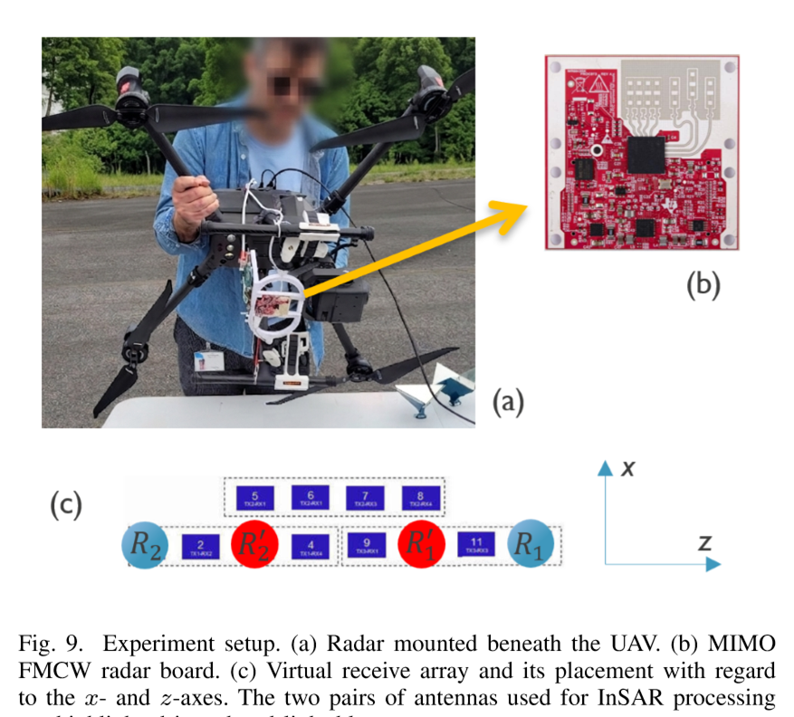
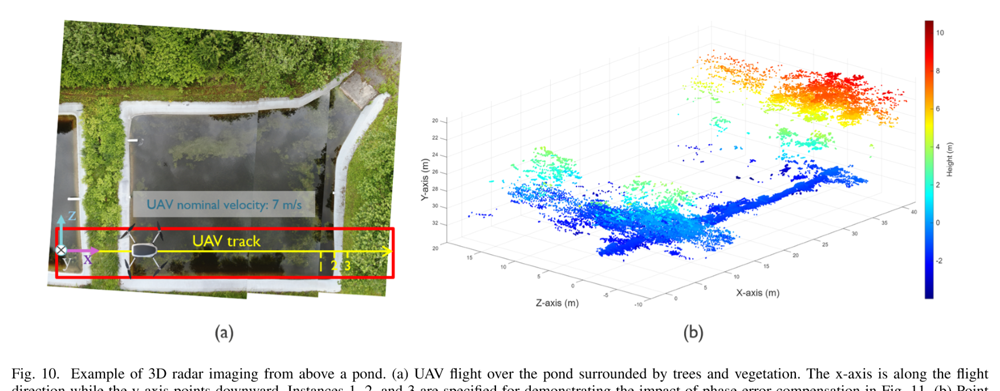
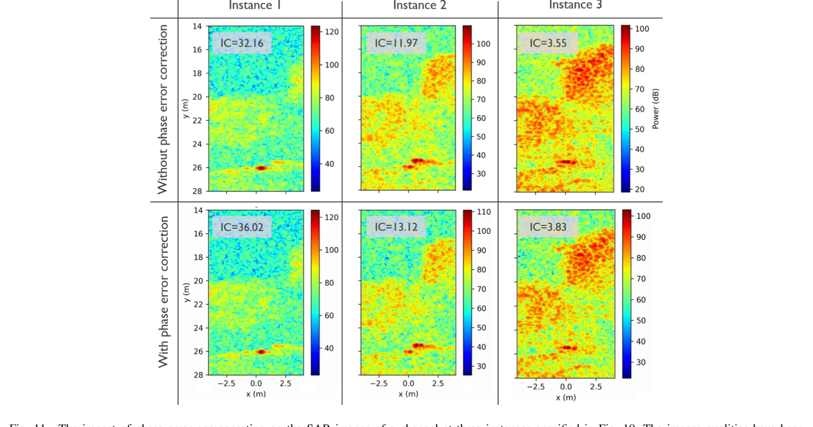
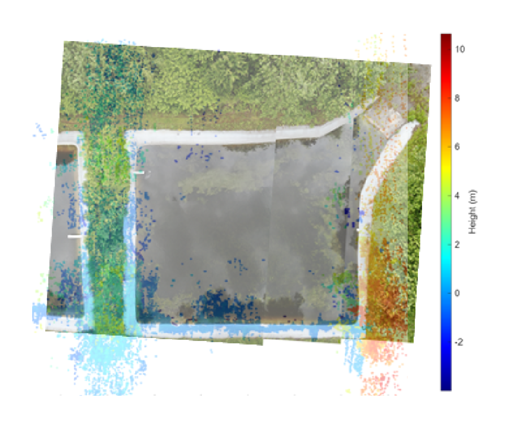

Radars improve the sensing robustness of Unmanned Aerial Vehicles (UAVs) by operating under poor lighting and weather conditions and seeing through occlusions such as vegetation. However, they suffer from poor angular resolution, which can be addressed using synthetic aperture radar (SAR) algorithms. State-of-the-art UAV SAR methods operate at a depression angle and are not suitable for sensor fusion applications where the data are collected from areas directly below the UAV (i.e., the UAV nadir).
In this paper, we present an interferometric SAR (InSAR) framework for reconstructing 3D images from the UAV nadir using a low-cost multi-input-multi-output (MIMO) mm-wave radar. Additionally, an effective method based on the phase gradient autofocus (PGA) is presented for compensating the phase error across the virtual receive antennas. We extend the framework to account for the UAV attitude angles and evaluate the proposed pipeline in both extensive simulations and real-world flight experiments over complex terrain.
A step-by-step walkthrough of the mathematical algorithms transforming raw mm-wave FMCW radar beat signals into calibrated, autofocused 3D point clouds from the UAV nadir.
Watch ground scatterers progressively reconstruct in real time as the drone advances along its track, with the radar beam expanding downward from the antenna array to the ground surface.
Detailed evaluation of phase error compensation via PGA. Compare defocused SAR imagery against autofocused results with pixel-perfect alignment, and inspect the phase unwrapping validation.

Interactive Wiper: Drag the blue handle to wipe across the SAR image at receiver \(R_1\). Notice how the smeared, defocused scatterer patterns on the left sharpen into crisp, isolated peak scatterers on the right, confirming the effectiveness of Phase Gradient Autofocus (PGA).
Fig. 4 in the paper: Quadratic phase error induced by along-track velocity errors vs. PGA estimation across chirps \(n \in [0, 255]\). Notice the close agreement around the center (\(n=127.5\)) and bounded residual discrepancy at the aperture edges.

Fig. 7 in the paper: Pixel-wise phase difference between \(R_1\) and \(R_2\) before (top) and after (bottom) phase unwrapping. Marked points \(p_1, p_2, p_3\) indicate corrected phases for higher \(z\) scatterers whose phases were wrapped outside \((-\pi, \pi]\).
Fitted Rayleigh background noise PDF with upper-tail cutoff threshold isolating dominant target scatterers from speckle noise.
| Flight Instance | Without PGA | With PGA | Contrast Boost |
|---|---|---|---|
| Instance 1 (Pond edge) | IC = 32.16 | IC = 36.02 | +12.0% |
| Instance 2 (Tree foliage) | IC = 11.97 | IC = 13.12 | +9.6% |
| Instance 3 (Dense canopy) | IC = 3.55 | IC = 3.83 | +7.9% |
Image Contrast metric: \(\text{IC} = \sqrt{\text{mean}\{(I - \bar{I})^2\}} / \bar{I}\). Higher values confirm sharper SAR focus.
Hardware parameters, performance metrics, and 10-trial Monte Carlo perturbation evaluations under randomized velocity errors and roll attitude disturbances.
Evaluated across 10 independent trials per scatterer count under random velocity (\(\pm 2\) m/s) and roll perturbations (\(\pm 5^\circ\)). The 3D Euclidean error remains consistently bounded under the 1.0-meter red dashed benchmark boundary.
| Parameter Name | Symbol | Value |
|---|---|---|
| Carrier Frequency | \(f_c\) | 60 GHz |
| Radar Bandwidth | \(B\) | 1.442 GHz |
| Pulse Repetition Interval | \(T_c\) | 102.88 μs |
| Chirps per Frame | \(N_c\) | 255 |
| Frame Period | \(T_f\) | 100 ms |
| Samples per Chirp | \(S\) | 400 |
| Sampling Frequency | \(F_s\) | 8 MHz |
| Nominal Flight Velocity | \(v\) | 7 m/s |
| Nominal Flight Altitude | \(h\) | 25 m AGL |
| Primary InSAR Baseline | \(B\) | 17.5 mm (\(7\frac{\lambda}{2}\)) |
| Secondary Coprime Baseline | \(B'\) | 12.5 mm (\(5\frac{\lambda}{2}\)) |
Click on any figure below to open it in full resolution. Metadata and BibTeX citation for academic referencing.
IEEE Transactions on Radar Systems • Interuniversity Micro-Electronics Center (IMEC), Leuven, Belgium • Vrije Universiteit Brussel (VUB), Brussels, Belgium
Summary: This paper introduces the first InSAR framework for 3D radar imaging directly beneath a UAV (nadir) using a 60 GHz MIMO FMCW radar with Phase Gradient Autofocus (PGA) across the virtual receive antennas.






@article{javadi2026uavnadir,
title = {3D Radar Imaging from the UAV Nadir},
author = {Javadi, S. Hamed and Sahli, Hichem and Bourdoux, Andr{\'e}},
journal = {IEEE Transactions on Radar Systems},
year = {2026},
publisher = {IEEE}
}Acknowledgement: The research leading to these results received funding from the Horizon Europe project Edge AI Technologies for Optimised Performance Embedded Processing (Grant agreement ID: 101097300).